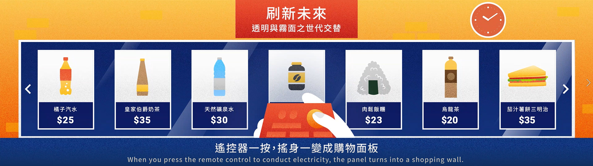

高雄第一科大領航計畫
虛實整合新零售商店
國立高雄科技大學為因應多元化社會之學習環境與產業發展趨勢，整合運用教學資源，擴展學生學習領域，開設各種學分學程課程。而其一學分學程為「虛實整合新零售」，此學程達到跨院、跨系所、跨領域之互相整合，希望學生能夠從學程中獲得智慧零售人才所需之知識及相關資通訊技術，進一步培養更多智慧零售人才。
Areas of Work :
Animation
Client :
國立高雄第一科技大學 NKUST
Date :
February 21, 2019
Role :
Storyboard、Key Visual Design、Animation
故事分鏡 Storyboard
視覺設計 Styleframe
